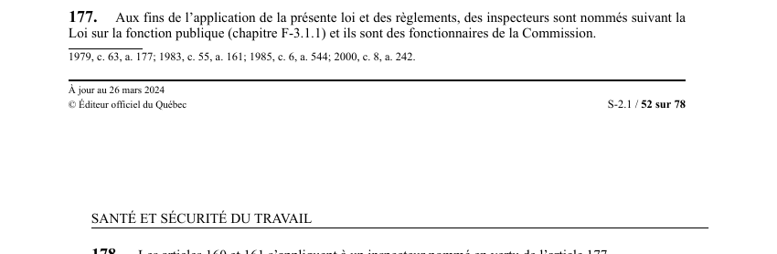

art-177-LSST : nomination des inspecteurs
Un article du wiki ⚖️ Recueil législatif
En bref
Article de rattachement : il dit d'où vient l'inspecteur qui se présente sur un chantier ou sous terre. Son autorité tient à sa nomination légale, pas à un mandat de l'employeur.
- Visé : inspecteurs · Nature : disposition d'habilitation
- Les inspecteurs sont nommés suivant la Loi sur la fonction publique (chapitre F-3.1.1).
- Ils ont le statut de fonctionnaires de la Commission.
- Portée de la nomination : l'application de la LSST et de tous ses règlements, donc aussi le RSSM en milieu minier.
- Point d'appui des articles suivants : art. 178 (abrogé) leur étend les articles 160 et 161, et les pouvoirs d'inspection commencent à art. 179.
🌐 LegisQuébec · 📄 PDF officiel (page 52)
Texte officiel : capture du PDF
{kind=link}

Toucher l'image pour l'agrandir🔗 Ouvrir a cette page : LSST.pdf : page 52 · texte a jour au 26 mars 2024
Voir aussi
- art. 178 : application des articles 160 et 161 (abrogé) · les articles 160 et 161 s'appliquent à un inspecteur nommé en vertu de l'article 177.
- art. 179 : accès de l'inspecteur au lieu de travail · entrée à toute heure raisonnable, accès aux livres, registres et dossiers, exhibition du certificat.
- art. 180 : pouvoirs généraux de l'inspecteur · enquête, exigence du plan des installations, prélèvement d'échantillons sans frais.
- 🏛️ Organisme : CNESST · les inspecteurs sont ses fonctionnaires.
- ↑ Loi : LSST
Pages qui pointent ici (9)
- art-1-LSST : définitions générales de la loi Recueil législatif
- art-179-LSST : pouvoirs d'accès de l'inspecteur Recueil législatif
- art-62-LSST Sécurité industrielle
- LSST Recueil législatif
- LSST : Chapitre VII : Inspecteur de la CNESST et révision Recueil législatif
- LSST, programmes et inspecteur Droit du travail
- Mettre en place une démarche d'appréciation des risques Sécurité industrielle
- Obligations de l'employeur Droit du travail
- Préparer une visite d'inspecteur CNESST Droit du travail